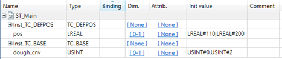
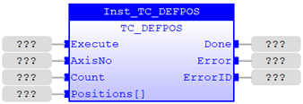
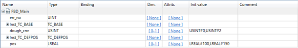
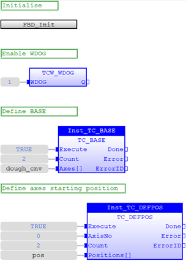
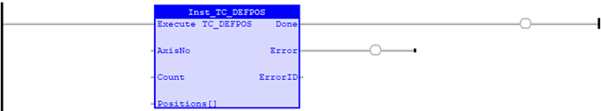
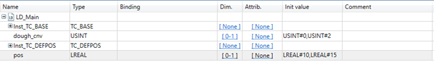
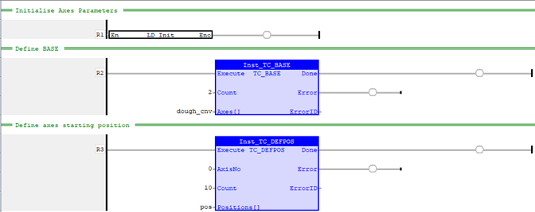

Motion Function
Applies a new DEFPOS request for the axis or axes specified by 'AxisNo'.
|
Execute : BOOL; |
Rising edge requests execution |
|
AxisNo : USINT; |
Axis number of the base axis |
|
Count : USINT; |
Number of values specified in the Positions array |
|
Positions[] : LREAL[]; |
Array containing the position values to be applied |
|
Done : BOOL; |
TRUE when function has completed normally |
|
Error : BOOL; |
TRUE if a program error is detected |
|
ErrorID : UINT; |
Returned error number |
When the Execute input changes from FALSE to TRUE (rising edge), the function block issues the command for execution in the velocity profile software. The values in the array Positions are applied to Count axes, starting at axis AxisNo.
A programming error, such as parameter out of range, will set the Error output and return an error ID number. For the Error ID reference, see the Trio Programming error list.
Inst_TC_DEFPOS( Execute (*BOOL*) , AxisNo (*USINT*) , Count (*USINT*) , Positions[] (*LREAL*) );
The program below starts with initialisation of axes parameters. Once WDOG is enabled, a new base array is set in dough_cnv arrray. Positions for axis 0 and axis 2 are defined in pos array as input argument for TC_DEFPOS2 command.
|
Local Variables |
|
|
Text Mode |
VAR
|
|
Grid Mode |
 |
// Initialise axes parameters
ST_Init
();
// Switch on WDOG
TCW_WDOG
(
1
);
// Set base array
Inst_TC_BASE(
TRUE
,
2
,dough_cnv);
// Define position for dough conveyors
Inst_TC_DEFPOS(
TRUE
,
0
,
2
,pos);

The program starts by calling an initialisation subprogram FBD_Init to set all axis parameters. Once WDOG is enabled, a new base array is set with axis 0 and axis 2 as defined in dough_cnv. Positions for both axis 0 and axis 2 are given in the next function block in the array pos.
|
Local Variables |
|
|
Text Mode |
VAR
|
|
Grid Mode |
 |


The program starts by calling an initialisation subprogram LD_Init to set all axis parameters. Once initialised, a new base array is set with axis 0 and axis 2 as defined in dough_cnv. Positions for both axis 0 and axis 2 are given in the next function block in the array pos.
|
Local Variables |
|
|
Text Mode |
VAR
|
|
Grid Mode |
 |
